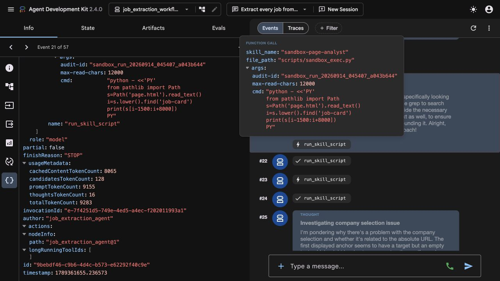
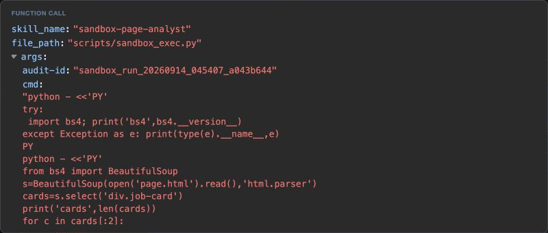
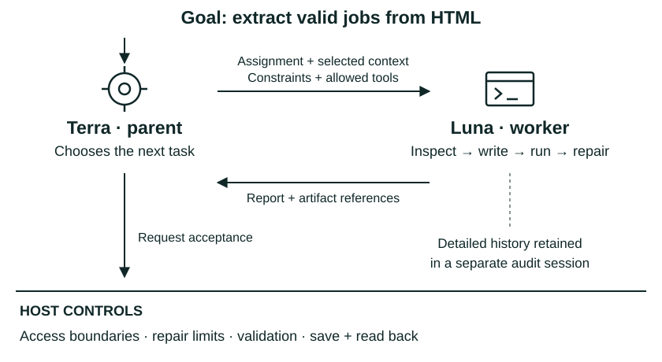
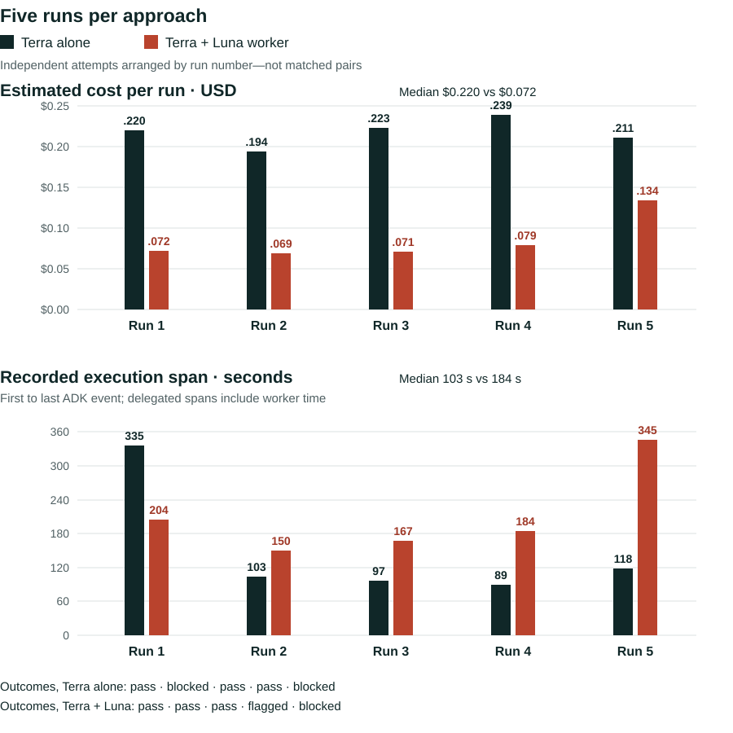
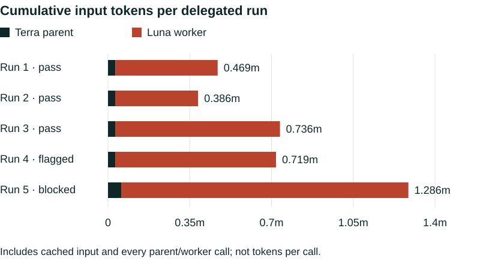

I’m building a custom autonomous agent loop because I want to experiment with the loop itself.
For most of my work, Codex or Claude Code would be the easier starting point. They already provide capable harnesses and extension points. [6] [7] But I wanted deeper control over context: what reaches the model, what gets compacted, and what survives between turns. I wanted to change those policies directly, without having to fit each experiment around an existing harness’s choices.
Building my own means more work, and it may be less capable. I accepted that tradeoff to have a place to try new ideas. First, though, I needed a loop that could finish a task. This article covers that baseline and the lessons from building it; experimenting with compaction comes next.
First, a working loop
I give the agent a goal, tools and a sandbox. It chooses how to inspect the data, write code and solve the task. My code sets the access boundaries and validates the output, returning feedback for repair or stopping when the repair limit is reached.
I chose ADK because its Pythonic, object-oriented design fits how I work. Its callbacks, sessions and workflow building blocks gave me enough structure to build a reusable harness while keeping my own policies in code. [8] The aim is to reuse the loop with different goals, inputs, skills and validators.
How the pieces fit
The worked example: job extraction from HTML
I tested the loop on a frozen, synthetic job-listing page. The agent had to work out how to extract the listings and write the code. I supplied checks for required fields, valid URLs and saved results.
![Goal: extract valid jobs from HTML. The agent can inspect 496,280 characters of stored HTML and read, write, patch and run code in a sandbox, choosing the extraction method. My host policies control access, acceptance and repair: no sandbox network access, no direct extractor database writes, and up to three repair attempts before termination if still invalid. Candidate output goes to validation; errors and feedback return to the agent while attempts remain. Conceptual illustration of author-stated policies, not proof of isolation or a captured run. Open full size.](./current-agent-host-boundaries.png)
The agent creates extractor.py; I do not supply it. My host code owns the access boundaries, validation and three-repair-attempt limit. The earlier saved run shows one URL repair, not a test of isolation or retry exhaustion. [9]
Which tools does this workflow expose?
- Discover the skills
list_skills,load_skill,list_skill_resourcesandload_skill_resource.- Operate the sandbox
run_skill_scriptdispatches the allowed scripts:sandbox_start.py,sandbox_read.py,sandbox_write_file.py,sandbox_apply_patch.py,sandbox_exec.pyandsandbox_finalize.py.- Load the input
load_job_listing_fixture_to_workspacesupplies the frozen HTML and acceptance contract.- Check and store
validate_job_extraction_file,validate_and_persist_job_extractionandquery_workflow_jobsvalidate, save and independently read back results.
Tools are exposed as relevant skills activate. The diagram groups capabilities, not separate read/write/run function tools. [9]
A 33-second edit of one frozen-fixture run. The host validated and saved 20 jobs; a read-only query matched the saved fields to the extractor’s output. One success, not a reliability test. Open the video ↗ [13]
Three lessons from building it
Getting it to work taught me three things about context, model capability and delegation.
1. Give access, not everything
My first attempt put the entire page’s HTML in the prompt. It exceeded the context window. Borrowing the context-as-a-variable idea from Recursive Language Models, I stored the HTML in a Python variable outside the prompt instead of feeding equal, overlapping chunks. [10] The agent could inspect it incrementally—choosing what to read until it understood the structure and could write an extractor.
Feed every HTML chunk into the prompt
Illustrative · 496,280 characters totalFind a marker; return only its surrounding HTML
Observed · 9,501 characters, about 1.9%Both bars use the full file’s character length as the scale. The left is an illustrative chunk-everything alternative; the right is one agent-chosen return from the saved run—not the agent’s total reading or a measured token saving.
The fixture loader first gave the model an automatic 2,000-character preview (event 10), mostly the document head. The agent then counted candidate markers (event 19) without returning the HTML. To inspect a promising match, it chose this narrower read:



Event 21 — the agent wrote this sandbox command to inspect the HTML around job-card; the full file remained outside the model’s prompt. The event-22 response returned 9,501 characters, including a terminal newline. The agent then sampled two cards to check the inferred structure (event 23), before inspecting more fields and writing the extractor. [9]



Event 23: a small structural check after reading the HTML, not the final extractor. Cropped from the saved run’s ADK view; not the original context-overflow experiment.
The agent recognized a repeated listing pattern and wrote a script to extract the jobs. The reusable part was access to the large object; the agent worked out how to inspect and process it. Prime Agent explored related persistent-environment ideas. [11]
2. Don’t make the harness compensate for the model
I chose GPT-5.4 mini to keep experiments cheap. One failure was especially revealing: it planned to run extractor.py, then inspected another file instead. Writing a sensible plan did not mean it would follow that plan. I kept adding checks and instructions—until the harness resembled the deterministic script I wanted the agent to write. That plan/action mismatch is my recollection; the recorded mini run below shows token growth and non-completion, not that specific mismatch.
extractor.pyDid: inspect another fileMy response: more procedural checksWith those more capable models and much less scaffolding, the workflow became straightforward. The lesson: remove prescribed moves, not permissions or acceptance checks.
The earlier harness stopped without accepted completion with both GPT-5.4 mini and full GPT-5.4. With fewer procedural requirements and bookkeeping calls, the simplified harness completed the task with GPT-5.6 Terra and full GPT-5.4. The chart includes all four runs.
![Input tokens per API call versus recorded events for four individual runs. The older full GPT-5.4 run, in rust, stops incomplete at event 211 and 147,633 input tokens. Older GPT-5.4 mini, in orange, has its last measured call at event 237 and 114,624 input tokens. The simplified harness completes with GPT-5.6 Terra in dark dashed at event 52 and 38,995 tokens, and full GPT-5.4 in blue dashed at event 40 and 45,427 tokens. Each completed run passed host checks, saved and reread 20 jobs. Not a controlled benchmark.](./current-token-event-four-run-comparison.svg)
Each point is a model response; the event count also includes tool responses and other runtime events, excluding the initial user message. Event ordinals are not model-call counts across harnesses. Input includes cached tokens, so the axis is not a cost measure. The orange mini line ends at its last measured call (event 237); the session ended three events later with its sandbox still active. Both simplified-harness runs passed host checks, saved and reread 20 jobs.
Full GPT-5.4 had also failed to finish with my earlier harness. When I tried it again with the simplified loop, it completed the task. That reinforced my lesson: give the model room to work instead of prescribing every move. Earlier run evidence ↗ · Simplified run evidence ↗
3. Can delegation finish the job for less?
Once I had a single-agent loop that could complete the workflow, I wanted to test another question: could an agent–subagent pattern still finish the job while reducing the cost? Instead of using the more expensive model for every step, I gave GPT-5.6 Terra a GPT-5.6 Luna worker to delegate execution to.
This experiment was inspired by Prime Agent, where subagents have their own contexts and execution environments. I borrowed the idea, not the full architecture: my parent calls one synchronous worker through a host-guarded tool, rather than orchestrating recursive, asynchronous agents. [11]

Terra chooses the assignment; Luna can take several tool actions to complete it. The parent receives a structured report and artifact references, not the worker’s full transcript. That detailed history remains available for audit. Neither an agent’s report nor its confidence replaces the host’s acceptance checks.

Across all five attempts, median estimated cost fell from $0.220 to $0.072—about 67% lower with delegation, including parent and worker. Median recorded execution span rose from 103 to 184 seconds. Both approaches passed every recorded check in three of five runs. The delegated “flagged” run saved and reread 20 jobs but failed the repair-limit check; it is not a clean pass.

Across the five delegated runs, the parent received 181,808 input tokens and the worker received 3,414,898. About 95% of the input went to Luna. Delegation used more cumulative input overall—3.60 million versus 1.88 million for the single agent—but less estimated money. Token volume and cost are different measures when the work runs on differently priced models.
Input, output and cost by agent
| Agent | Input tokens | Output tokens | Estimated cost |
|---|---|---|---|
| Single agent · Terra | 1,876,566 | 23,839 | $1.0863 |
| Delegated parent · Terra | 181,808 | 4,924 | $0.2492 |
| Delegated worker · Luna | 3,414,898 | 43,863 | $0.1765 |
Input includes cached tokens. Output is the recorded ADK candidate-token count; reasoning counts are retained separately in the linked data. Cost follows the historical run estimator’s convention of pricing candidate and reasoning counts separately. The blocked delegated run has no success manifest, so its usage and cost come from the persisted parent and worker sessions. Per-run breakdown and definitions ↗
For this fixture, delegation could finish the job at lower cost. It also introduced more coordination, and one worker exhausted its call limit without finishing. My takeaway is to test the cost of the whole agent family, including failed attempts—not just the parent’s smaller context or a single successful run. [12]
A working loop to experiment with
I now have a loop that can complete this extraction task and check its output automatically. Getting there meant giving the agent selective access to data, simplifying the instructions, and testing delegation’s cost and time tradeoff. It is a starting point: I still need to test reliability and reuse on other workflows, but I can now change the loop and measure what happens.
Next: SKILL.state
I want to test whether the loop can use a structured execution state and the latest observation instead of replaying its full conversation, drawing on the SKILL.state paper. That is a planned experiment, not a result shown here. The hidden-contracts article remains a later follow-up.
Sources
Sources distinguish recorded results from my observations and research inspiration. Citation numbers are retained for existing links.
- OpenAI — Codex hooks and app-server. Existing programmatic controls.
- Anthropic — Claude Agent SDK hooks. Existing lifecycle controls.
- Google ADK — Callback types and custom orchestration. Agent, model and tool intervention points.
- Recorded-run manifest and Tool inventory, HTML lengths, inspection sequence and screenshot provenance · September 14, 2026 run. Model, counts, events and synthetic-fixture limits; events 10 and 19 captured from saved history on September 23, events 21–22 on September 20, and event 23 on September 18.
- Recursive Language Models · v2, §2. Input as an environment variable.
- Prime Agent · v1, §2.2–2.4. Persistent state, separate subagent contexts and recursive orchestration; inspiration, not a reproduction.
- Five-run extraction comparison · September 19, 2026. Distilled recorded usage for single-agent and delegated approaches; all attempts included, with outcomes and accounting definitions.
- Fresh demonstration audit summary · September 23, 2026. One successful frozen-fixture run and a separate read-only database comparison; this source is distinct from the September 14 saved run.